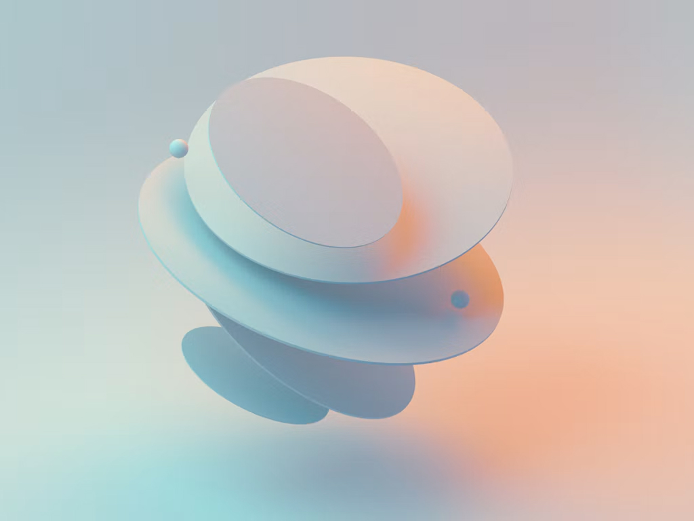
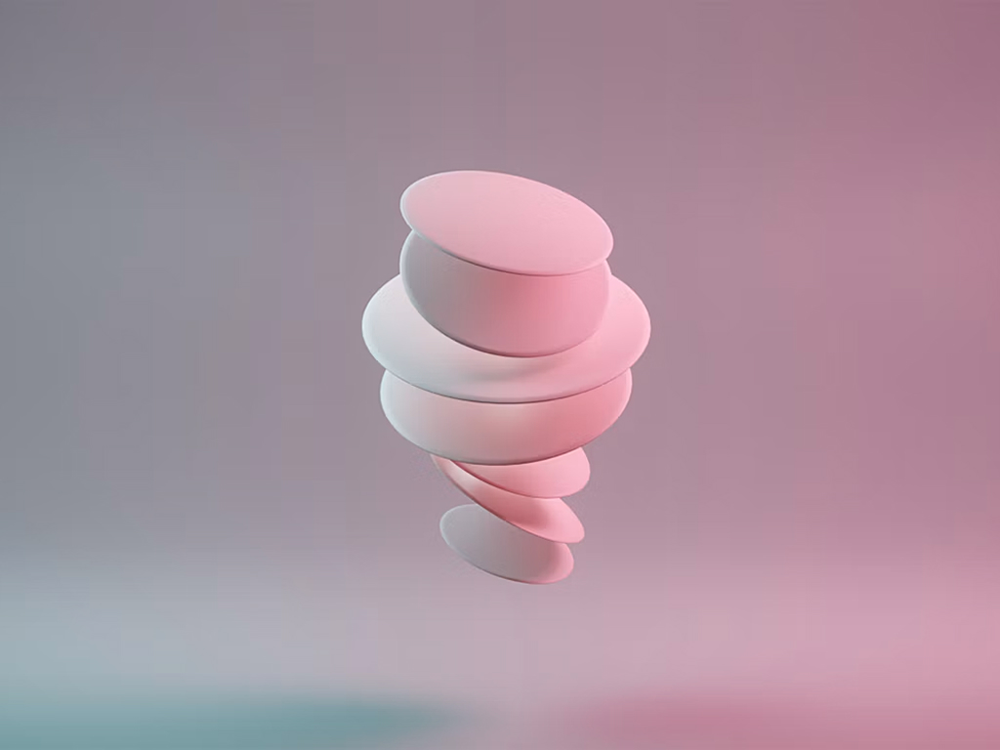
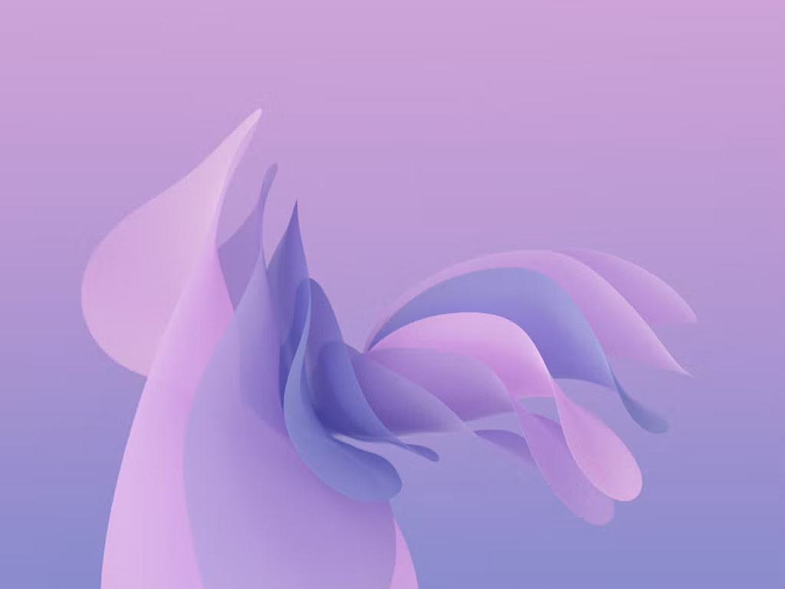

Landscape358:215 · Large crop
Square1:1
Portrait2:3 · Vertical crop
ImagePhoto. Every card type.

Image + previewAnimated preview (5–7s, muted, loops while on screen). No controls — the card link takes the click.
Image + preview · video articleSame, with the play icon as an indicator only (size per card type, see Article Card).
VideoClick to play (muted). Playing: controls fade after 3s, back on mouse move; on touch the first tap shows them. Not on SM or Image Only.
00:00
-00:11
00:00
-00:11
00:00
-00:11
CarouselUp to 5 images or previews (slide 3 is a preview). Arrows 40% → 100% on hover, swipe on touch. Not on SM or Image Only.


